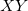

Polygonfläche
Math-PolygonArea
Beschreibung
Die X-Funktion polyarea berechnet die Fläche eines Polygons mit Hilfe der Determinanten einer multivariaten Matrix.
Um diese Funktion zu verwenden:
- Markieren Sie die Eingabedaten im Arbeitsblatt oder aktivieren Sie die Zeichnung, die die Eingabedaten enthält.
- Wählen Sie Analyse: Mathematik: Polygonfläche im Origin-Menü, um das Dialogfeld polyarea zu öffnen. Der Dialog polyarea verwendet die X-Funktion polyarea, um die Polygonfläche zu berechnen. Die Ergebnisse werden im Ergebnisfenster ausgegeben.
Dialogoptionen
| Eingabe |
Der XY-Eingabebereich sollte eine abgeschlossene Fläche definieren.
|
| Flächentyp |
- Mathematische Fläche
- Der Flächenwert kann positiv oder negativ sein. Er wird anhand der Formel aus dem Abschnitt Algorithmus berechnet.
- Absolute Fläche
- Der absolute Wert der Fläche mit Vorzeichen, die immer positiv ist. Einzelheiten lesen Sie bitte im Abschnitt zum Algorithmus nach.
|
Beispiele
- Erstellen Sie eine neue Arbeitsmappe und importieren Sie die Datei <Origin Installationsordner>\Samples\Mathematics\Circle.dat.
- Markieren Sie Spalte B und wählen Sie Zeichnen: Linie: Liniendiagramm im Origin-Menü zum Zeichnen eines Diagramms.
- Stellen Sie sicher, dass das im letzten Schritt erstellte Diagramm aktiv ist. Wählen Sie Analyse: Mathematik: Polygonfläche im Origin-Menü, um das Dialogfeld polyarea zu öffnen. Wählen Sie Mathematische Fläche in der Auswahlliste Flächentyp. Klicken Sie anschließend auf die Schaltfläche OK.
- Das Ergebnis befindet sich im Ergebnisbericht.

Algorithmus
Diese X-Funktion kann die Fläche (mit Vorzeichen) eines sich nicht überschneidenden Polygons auf der Ebene  berechnen. Angenommen, die Scheitelpunkte des Polygons sind , (x_2, y_2), ..., (x_n, y_n)\!") . Die mathematische Fläche kann berechnet werden mit:
. Die mathematische Fläche kann berechnet werden mit:
")
")
Im Fall eines konvexen Polygons ist die mathematische Fläche des Polygons positiv, wenn die Vertizes nacheinander gegen den Uhrzeigersinn aufgelistet werden; wenn sie im Uhrzeigersinn aufgelistet sind, ist die mathematische Fläche negativ.
Die absolute Fläche des Polygons wird als absoluter Wert der mathematischen Fläche berechnet.